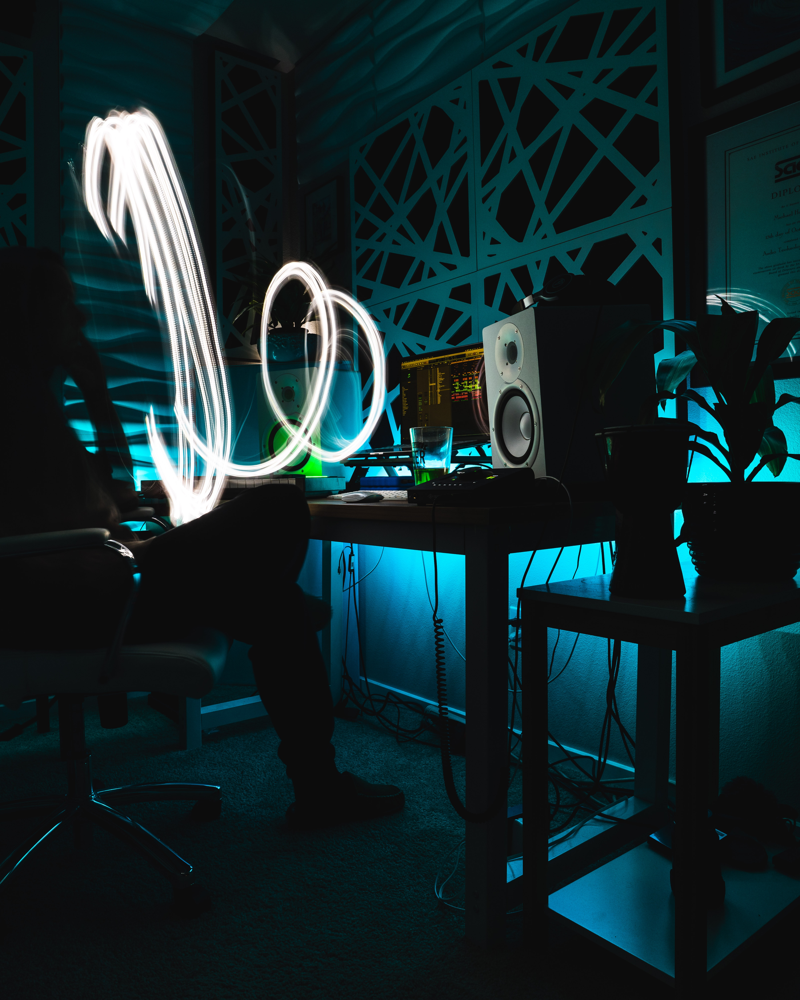

I currently work in cybersecurity with a focus on Governance, Risk & Compliance (GRC). My work involves supporting organizations in understanding and managing security risks, contributing to compliance processes, and helping define and structure security controls within complex environments. I am particularly interested in the strategic and organizational side of cybersecurity, where risk, governance and business needs intersect.
I completed a Master's degree in Cybersecurity at the University of Salerno, where I explored different areas of the field, including security analysis, system protection and applied security concepts. During this period, I worked on academic projects, some of which are available on my GitHub.
I hold a Bachelor's degree in Computer Science, which provided me with a solid foundation in systems, programming concepts and logical reasoning. This background has been fundamental in shaping my understanding of technology and supporting my transition into cybersecurity.
Outside of my professional work, I am passionate about music production. I started as a self-taught producer and developed my skills through practice, courses and continuous experimentation. I mainly use FL Studio and enjoy working on electronic music and sound design. In my free time, I also enjoy reading, working out and playing football.
I enjoy traveling and discovering new places and cultures. I have visited several countries across Europe, including Spain, Greece, the Czech Republic and Hungary, as well as many regions in Italy.
